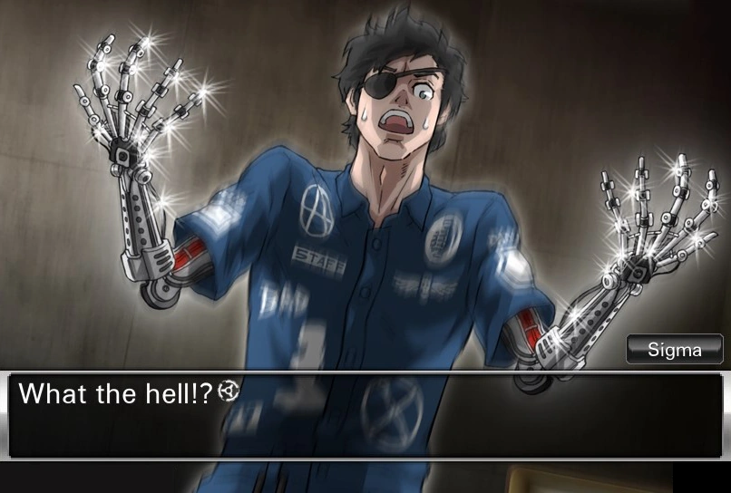

Everything about him:
In reality, Sigma is in his 67-year old body. His hair is gray, longer than it was when his body was younger, and somewhat thinned. He has cybernetic arms with ABT (Artificial Biological Tissue), giving the appearance of his youthful arms. Also, his left eye has been replaced with a bionic eye. This is also why the female players get angry at him when he makes sexual innuendos.
......
He's easily swayed by his emotions, which makes him a poor choice for a game about trust and betrayal. He does, however, easily change opinion because of the ideas and comments of the people around him, and those comments can cause him to make different decisions than he might have normally made.
